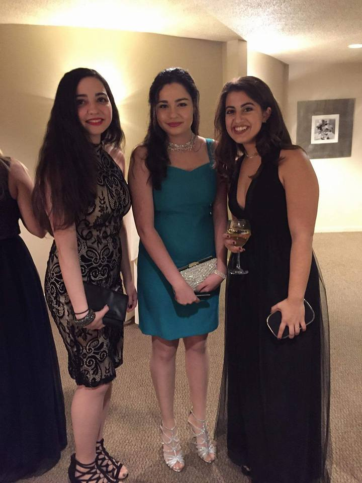
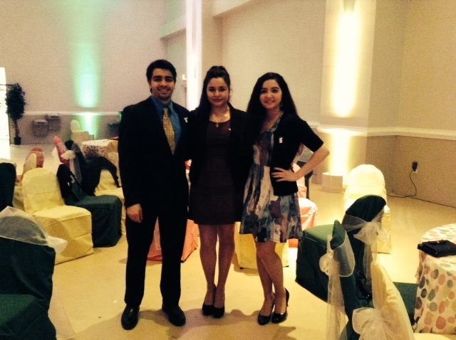
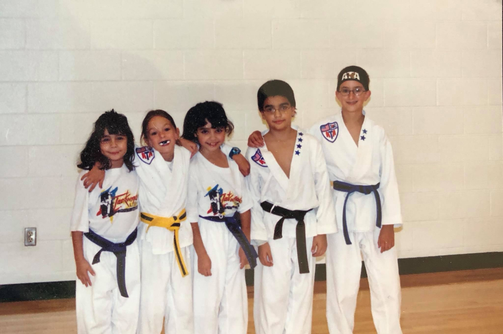

My name is Athina Lambrinos and I am currently a Senior at the College of Charleston. I am majoring in Computing in the Arts with a concentration in Digital Media, as well as minoring in Business Administration. I ultimately want to go into the music production field, but am currently very interested in web design and social media marketing.
I have one older brother who is 24 years old and a twin sister who is 21 (same age as me). I was born and raised in Myrtle Beach, South Carolina, however I have a very strong connections to Greece. I have a lot of family in Greece so we like to visit whenever we can. I grew up in the Greek culture and continue to incorporate it into my life today.
A few hobbies that I have continued throughout my life are Taekwondo (a form of Martial Arts), swim team, and volleyball. I did Taekwondo for 15 years of my life and taught a class for about 3 years. I participated in swim team and volleyball for a couple years but eventually had to stop to come to the College of Charleston.
Some other smaller things I enjoy doing include listening to music/discovering new music, photography, and cooking.
